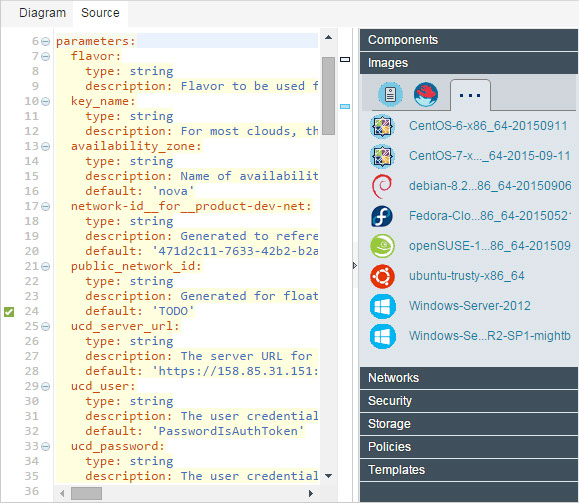

Editing blueprint source code
You can edit the Heat Orchestration Template (HOT) source code of blueprints directly.
About this task

To edit a blueprint in a graphical editor, click the Diagram tab. For more information, see Editing Terraform blueprint diagram.
The palette at the right side of the editor shows resources that you can add to the
blueprint. The palette is divided into multiple drawers. If a drawer contains many items, the
contents are separated across tabs. On tablet computers, the pallet is on the right side of the
editor and is collapsed by default. If you are using a tablet computer, to add elements to a
blueprint, typically you click Add to open the Add Element window.
- The Components drawer shows components and tags from the Deploy server. This drawer also includes a resource named Referenced Component. This resource represents a generic component. You use the Referenced Component to represent a component that you specify later.
- The Catalogs drawer lists assets from vRealize Automation blueprints that are available for use, if you are connected to a VMware vRealize Automation cloud. To reuse these existing catalog items, you can drag one onto an empty blueprint.
- The Instances drawer shows the resources for creating virtual machines in cloud environments. You can drag these to the blueprint. This drawer is available only when editing a Terraform blueprint.
- The Networks drawer shows referenced networks and new networks. To connect a virtual machine to an existing network, use a referenced network. To create a new network in the cloud, use a new network.
- The Storage drawer shows cloud storage volumes. To add a storage volume, drag a volume to an instance and specify the mount point for the volume.
- The Security drawer shows security configurations that you can apply to an instance.
- The Modules drawer shows the Terraform modules that you have access to. To use a module, drag it onto the canvas and supply the module property values. This drawer is available only when editing a Terraform blueprint.
- The Policies drawer includes resources such as load balancers and autoscaling groups. This drawer is available only when editing a Heat blueprint.
- The Other drawer includes miscellaneous resources such as deployment sequence, load balancers, and null resource. A null resource is generally used to run Terraform provisioners on a virtual machine. This drawer is available only when editing a Terraform blueprint.
You can click and drag resources from the palette just like when you edit the diagram.
Note: Ensure that you drag your resources into
the correct section of the source file.
The left side of the editor shows the following sections:
- The Outline section shows the structure of the blueprint.
- The Parameters section shows the parameters in the blueprint. Click a parameter to go to its definition, or drag it to the blueprint.
- The Parameter groups section shows the parameter groups in the blueprint.
- The Resources section shows the resources that are in the template, such as virtual images.
- The Outputs section shows the output parameters, usually attributes, for the blueprint. The attributes in this section usually show relevant derived values, such as the URL of virtual instances.
If the blueprint contains an error, warning, or unfinished TODO item, an icon
that represents the most serious types of item is displayed on the editor toolbar. For example, if
the blueprint contains at least one error, the error icon is displayed. Hover over the icon  to display a list of all items that you must correct or complete before you provision the
blueprint.
to display a list of all items that you must correct or complete before you provision the
blueprint.